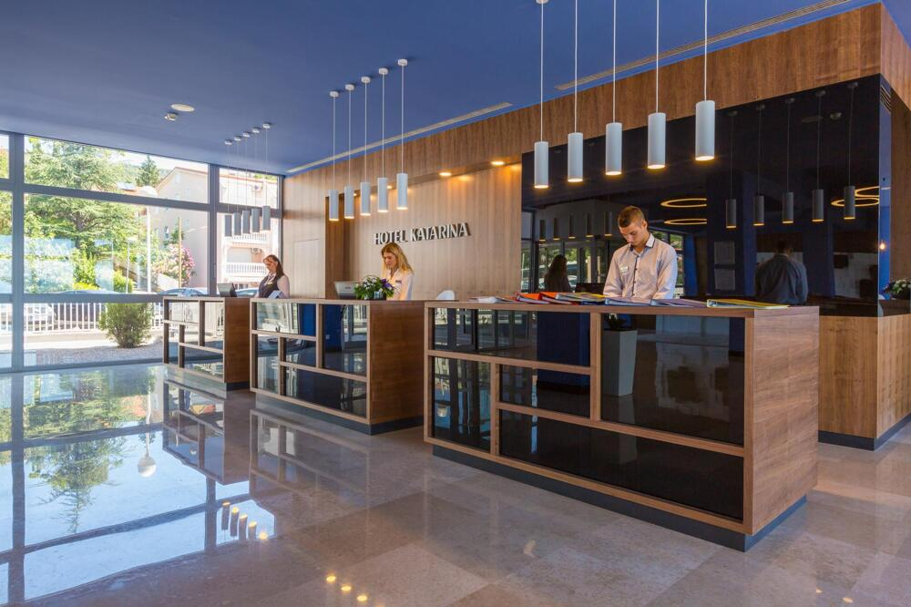
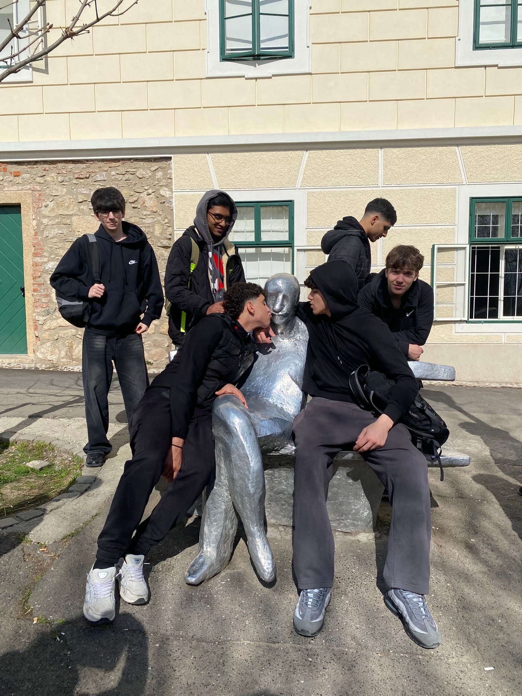
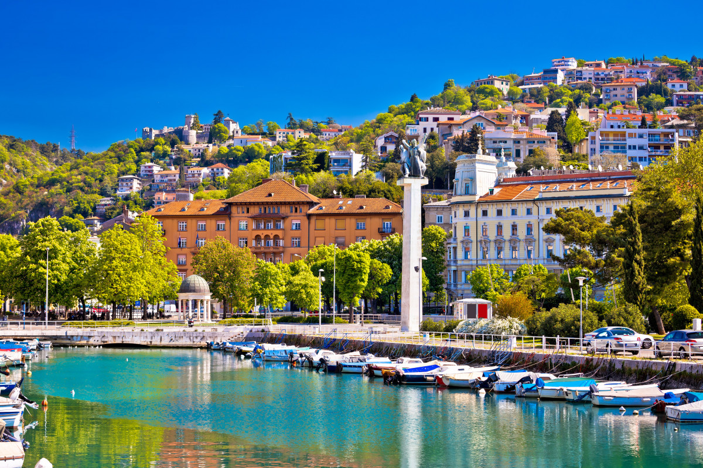
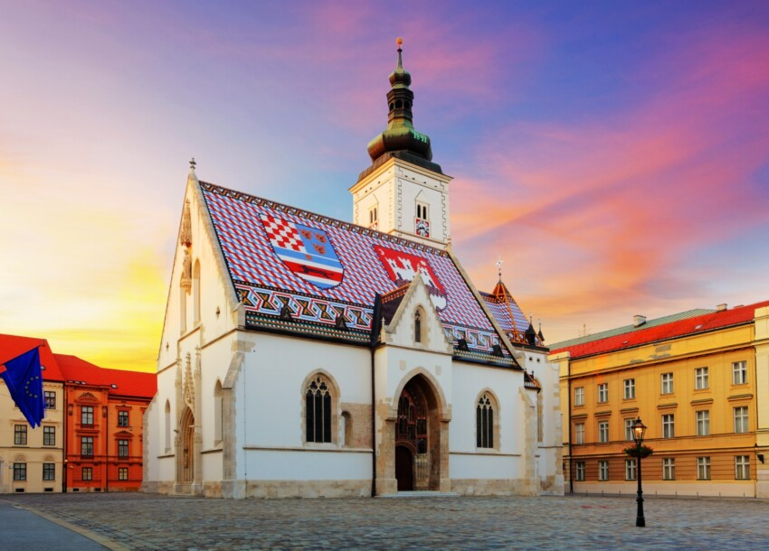
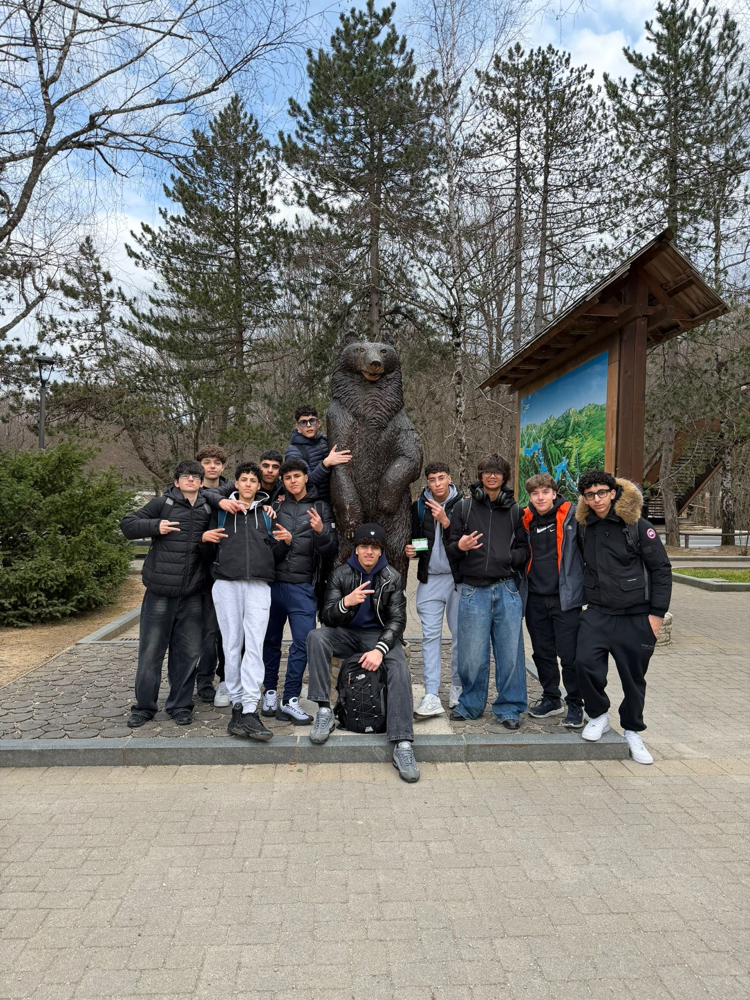
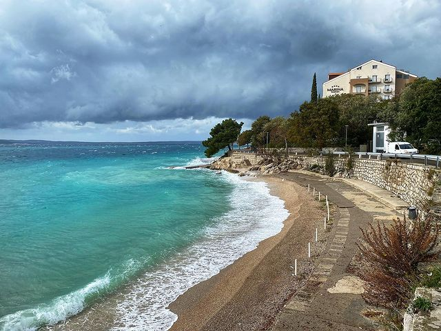
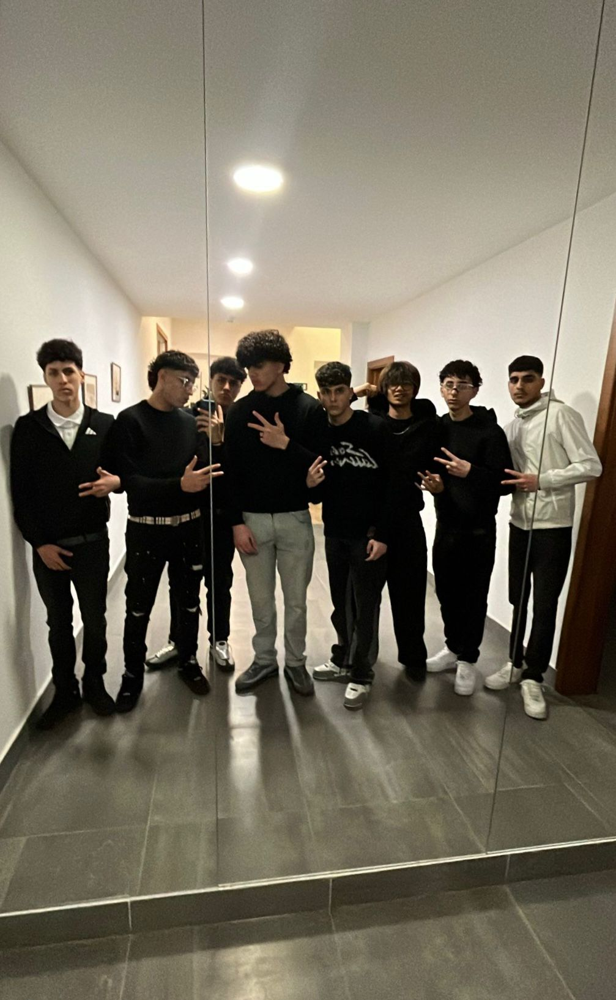

Il nostro Hotel a Selce

Abbiamo alloggiato presso l'Hotel Katarina a Selce. Situato sulla costa, è stato la nostra base operativa per esplorare le meraviglie della Croazia e della Slovenia.
Un'esperienza indimenticabile alla scoperta della Croazia.

Abbiamo alloggiato presso l'Hotel Katarina a Selce. Situato sulla costa, è stato la nostra base operativa per esplorare le meraviglie della Croazia e della Slovenia.

Il gruppo al tramonto a Selce

I meravigliosi paesaggi naturali e le coste della Croazia

Esplorando i vicoli storici di zagabria e san marco

Un altro bellissimo scatto ricordo con i compagni di viaggio

I colori del mare cristallino lungo la costa

Dettagli dell'architettura e monumenti storici

Momenti di relax e divertimento durante le pause

L'ultima foto ricordo prima di rimetterci in viaggio